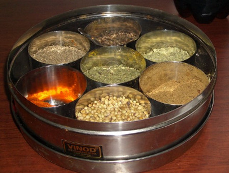

Cuisine
Indian cuisine is based on the system of Indian Medicine known as Ayurveda. They are related by similiar usage of spices. Often, Indian cooking is distinguished by the use of a larger variety of vegetables than any other cuisine. Within these recognisable similarities, there is an enormous variety of local styles. To the east, the Bengali and Assamese styles shade off into the cuisines of East Asia. All coastal kitchens make strong use of fish and coconuts. The desert cuisines of Rajasthan and Gujarat use an immense variety of dals and achars (preserves) to substitute for the relative lack of fresh vegetables. The use of tamarind to impart sourness distinguishes Tamil food. The Andhra kitchen is accused, sometimes unfairly, of using excessive amounts of chilies. All along the northern plain, from Punjab through Uttar Pradesh and Bihar, a variety of flours are used to make chapatis and other closely related breads. In the rain-swept regions of the north-eastern foothills and along the coasts, a large variety of rices are used. Potatoes are not used as the staple carbohydrate in any part of India. Modern India is going through a period of rapid culinary evolution. With urbanisation and the consequent evolution of patterns of living, home-cooked food has become simpler. Old recipes are recalled more often than used. A small number of influential cookbooks have served the purpose of preserving some of this culinary heritage at the cost of homogenising palates. Meanwhile restaurants, increasingly popular, encourage mixing of styles. Dosas and Jain pizzas are immediately recognisable by many Indians in cities.